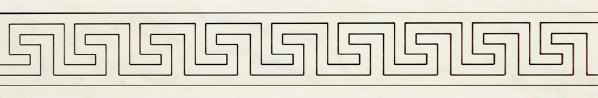
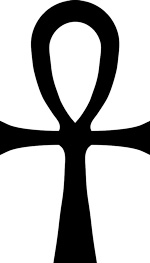

Речевое мышление, присущее человеку, не исчерпывает всех форм мысли. Есть большая часть мышления, которая не
имеет непосредственного отношения к речевому мышлению - это символическое мышление, возникшее задолго до
появления письменности и уходящее корнями в глубь веков. Символическое мышление на
протяжении многих
тысячелетий является языком древних знаний.
Символизм и сакральная геометрия объединяют мудрость многих мистических школ, как
существовавших задолго до
нашей эры, так и современных, связывающих эзотерику с последними достижениями квантовой физики. Сакральные
геометрические формы и символы не являются просто произведениями искусства. И воспринимать их надо, в связи
с теми сокровенными явлениями, которые они помогают выразить. Все древние символы содержат информацию о
проявленном мире и о месте человека в нем. Все есть энергия, вибрация, гармония, и все есть геометрия.
Сакральные геометрические формы — важное средство для духовного роста. Человек, не
представляющий себе силу,
заключенную в геометрических формах, не осознающий, что с их помощью он вступает в контакт с фантастически
богатым информационно-энергетическим миром, лишен очень многого. Он теряет возможность питаться земной и
космической энергией во всей её полноте, что неминуемо скажется на его физическом и духовном развитии.
Понимание простых истин сакральной геометрии ведет к развитию сознания и открытию сердца, что является
следующим шагом в человеческом развитии. Сакральная геометрия играла и играет основную роль в искусстве,
архитектуре и философии многих культур на протяжении тысяч лет.
Вселенная - единая система, работающая в определенном ритме. Этот ритм - закон, без которого не было бы
взаимосвязи, не было бы жизни. Каждая форма - объемная или плоская - сотворена в соответствии с законом
ритма и характеризуется своим, только ей свойственным излучением. Гармоничные формы - проявления правильного
ритма, а негармоничные - беспорядка и нарушение закона.
Существует группа пяти основных математических отношений, которые можно найти во всем мире: от японских
пагод до храмов майя в Юкатане, от Стоунхенджа до Великой Пирамиды Гизы. Знание этих отношений является
основой для понимания сакральной геометрии. Эти отношения:
Число π (пи) = 3,1416
Число π (пи) - математическая константа, выражающая отношение длины окружности к длине её диаметра,
иррациональное число, поскольку его значение не может быть точно выражено в виде дроби. Число π (пи) можно
найти в любом круге. В сакральной геометрии круг представляет «духовные царства».
(Одно из наиболее
известных священных мест в форме круга - лабиринт на полу собора в Шартре).
Квадратный корень числа 2, √2 = 1,414
В сакральной геометрии квадрат представляет физический мир. C √2 связано открытие несоизмеримых отрезков,
которое привело математиков к разработке теории иррациональных чисел, и в конечном итоге к созданию
современной математики. С √2 связаны почти все известные фигуры: треугольник, квадрат, шестиугольник.
Квадрат был обнаружен в одном из самых священных мест - в Храме Соломона, являющемся центральным символом
масонства. Согласно текстам Филона Александрийского, храм Соломона являлся геометрической фигурой,
рассчитанной специально для образования «силового поля», местом перехода из одного мира в другой: из мира
зримого в мир незримого. Исаак Ньютон посвятил вычислению устройства Иерусалимского храма все последние годы
своей жизни. Для него Храм Соломона был чертежом Вселенной, носителем всех тайн
мира, он верил, что законы
природы закодированы в его строении и пропорциях между различными его частями.
Vesica Piscis
Структура, именуемая «vesica piscis» (рыбий пузырь) образуется, когда центры двух кругов с равными радиусами
расположены на окружностях друг друга. Площадь, ограниченная пересекающимися дугами кругов - «vesica
piscis». Эта конфигурация – одна из преобладающих и самых важных среди всех взаимосвязей в сакральной
геометрии. Ее духовное значение использовалось художниками Ренессанса в живописи и архитектуре.
«Цветок
Жизни»
, один из основных сакральных символов человечества, содержит в себе множество «vesica piscis».
человечеству мистических символов. Платон указывал: «Между множеством треугольников есть один,
прекраснейший, ради которого мы оставим все прочие, а именно тот, который в соединении с подобным ему
образует третий треугольник — равносторонний». Равносторонний треугольник, полученный на основе
«vesica piscis» - один из самых ранних известных
Квадратный корень числа 5, √5= 2,236
Двойной квадрат. Число 5 пифагорейцы почитали в качестве священного, оно служило символом их союза.
Диагональ двойного квадрата относится к меньшей стороне так же, как √5 к 1. Среднее арифметическое 1 и √5
(1+2,236):2=1,618 - Золотое сечение - φ (фи).
Число φ (фи) - 1,618
Золотое сечение. Основополагающей константой в архитектуре, живописи и науке считается Золотое сечение.
Определение золотого сечения Платоном: «Для соединения двух частей с третьей совершенным образом необходима
пропорция, которая бы скрепила их в единое целое. При этом одна часть целого должна так относиться к другой,
как целое к большей части». Фи – величина исчисления пропорций – трансцендентное число, поскольку выражается
бесконечной десятичной дробью. Древние мистики считали числовой ряд Фибоначчи: (1, 2, 3, 5, 8, 13, 21, 34,
55, 89 и т.д.) универсальным ключом к объяснению законов мироздания. Находя частное между двумя рядом
стоящими числами этого ряда, можно приблизиться к числу Фи - 1,618... - Золотому сечению, но никогда не
достигнуть его. Последовательность Фибоначчи была хорошо известна в древней Индии, где она применялась в
метрических науках намного раньше, чем она стала известна в Европе. На Западе эта последовательность была
исследована Леонардо Пизанским, известным как Фибоначчи. Отношения Фибоначчи встречаются в природе
повсеместно, эта пропорция использовалось многими художниками и скульпторами с незапамятных времен. Число Фи
присутствует, прежде всего, в человеке, «божественная пропорция» человеческого тела отображена на известном
рисунке Леонардо да Винчи. В храмах фараонов: Сети I в Абидосе, Рамсеса II в Луксоре, пропорции фигур
соответствуют Золотому сечению. На пропорции Фи основана конструкция Великой Пирамиды Гизы. В
древнегреческом храме Парфенона также присутствуют золотые пропорции. Фи можно найти повсюду: в цветах,
растениях, атомах, египетских иероглифах, архитектуре, в спиралях морской ракушки и галактик. Платон
рассматривал Фи как ключ к пониманию физики космоса.
Итак, существуют пять мистических геометрических отношений.Они служат основой всех
сакрально-геометрических построений.
- π (пи)
- φ (фи)
- √2
- √5
- Vesica Piscis
Согласно данным сакральной геометрии, многие геометрические формы создают пространство для циркуляции
определенных видов энергии (каждая форма обладает своим видом энергии). Направленное энергетическое
воздействие сакральных изображений (символов) влияет на внутреннюю структуру заряжаемого организма или
предмета. В зависимости от различных параметров одни символы излучают положительную энергию, другие -
отрицательную.
Любые символы, нарисованные на бумаге, на земле или другом материале, излучают в окружающее пространство
энергию перпендикулярно плоскости, в которой они изображены. И это излучение может быть довольно интенсивным
и оказывать значительное влияние на организм человека.
Приведу некоторые примеры сакральных символов: какие они бывают, как и для чего применяются.
В древности были широко распространены и известны до наших дней, различные излучатели – двухмерные генераторы>, представляющие собой концентрические квадраты, треугольники,
круги.

В Древнем Риме, например, был широко распространен в качестве мощного излучателя магический квадрат,
состоящий из написанных букв, разделенных на пять вертикальных столбцов, по пять знаков в каждом.
Энергию в пространство излучают не только наборы букв, но и отдельные буквы и цифры, рисунки и орнаменты.
Например, Меандр, распространённый тип геометрического орнамента изменяет частоты
излучений, переводит их в
другой диапазон. Форма рисунка излучает вибрации в обе стороны перпендикулярно своей плоскости. Нанесённый
по периметру помещения меандр экранирует помещение защитной плоскостью, защищая пребывающего в нём человека
от воздействия неблагоприятных для него излучений.
Форма спирали, например, мощный энергоизлучатель, аккумулирующий энергию окружающего пространства. Если Вы
смотрите на спираль так, что ее витки направлены по часовой стрелке, то Вы получаете положительную энергию,
если против - отрицательную. Правозакрученная спираль, расположенная на сильном месте будет усиливать его
энергетику. И наоборот, это свойство можно использовать для подавления геопатогенных зон или для уменьшения
энергетической активности местности. Этим же свойством обладает и свастика.
Значительно улучшить качество энергетики помещения, можно и с помощью знаменитого символа жизни анкха. В нем
объединяются крест, символ жизни, и круг, символ вечности. Вместе же они обозначают вечную жизнь,
бессмертие. И, тем не менее, анкх - является чем-то несравненно большим, чем просто символом жизни,
поскольку связан с трансформацией обычных жизненных процессов и гармонизацией пространства. Если его
схематично изобразить в ряд из 5 – 7 символов, он сгармонизирует помещение до 100 кв. м. Если Вы не
обладаете целостным видением, проверьте с помощью маятника
